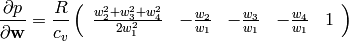
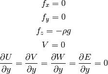

Compressible Euler Equations¶
The compressible Euler equations are:

where

is the total energy per unit volume ( is the kinetic energy per
unit volume),
is the kinetic energy per
unit volume),  is the internal energy per unit mass (
is the internal energy per unit mass ( )
and we use the ideal gas equations, so:
)
and we use the ideal gas equations, so:

where
 is the number of moles of gas,
is the number of moles of gas,
 is the molar mass of the gas (e.g. a mass of one mole of the gas),
is the molar mass of the gas (e.g. a mass of one mole of the gas),
 is the density of the gas,
is the density of the gas,
 is the ideal gas constant,
is the ideal gas constant,
 is the specific ideal gas constant,
is the specific ideal gas constant,
 is the specific heat capacity at constant volume (e.g. a heat capacity
per unit volume),
is the specific heat capacity at constant volume (e.g. a heat capacity
per unit volume),
 is the volume
and
is the volume
and  is the temperature of the gas.
Of those, , , ,
is the temperature of the gas.
Of those, , , ,  , are constants,
, are constants,  , ,
, ,  and are
functions of
and are
functions of  .
.
We use the substitution:

and we get:

Now we write  and we get:
and we get:
![\frac{\partial}{\partial t} \left( \begin{array}{c}
\varrho\\ U\\ V\\ W\\ E
\end{array} \right)
+ \frac{\partial}{\partial x} \left( \begin{array}{c}
U\\
\frac{U^2}{\varrho} + p\\
\frac{UV}{\varrho}\\
\frac{UW}{\varrho}\\
\frac{U}{\varrho}(E+p)
\end{array} \right)
+ \frac{\partial}{\partial y} \left( \begin{array}{c}
V\\
\frac{VU}{\varrho}\\
\frac{V^2}{\varrho} + p\\
\frac{VW}{\varrho}\\
\frac{V}{\varrho}(E+p)
\end{array} \right)
+ \frac{\partial}{\partial z} \left( \begin{array}{c}
W\\
\frac{WU}{\varrho}\\
\frac{WV}{\varrho}\\
\frac{W^2}{\varrho} + p\\
\frac{W}{\varrho}(E+p)
\end{array} \right) + \left( \begin{array}{c}
0\\
-f_x\\
-f_y\\
-f_z\\
0\\
\end{array} \right) =
\left( \begin{array}{c} 0\\ 0\\ 0\\ 0\\ 0 \end{array} \right)
p = {R\over c_v} \left(E-{U^2+V^2+W^2\over2\rho}\right)](../../images/math/0cf92093463953430ff0acd6c75eff77a9b82bd8.png)
We solve for the unknowns ,  , ,
, ,  and as functions of
and as functions of  , the rest (, ,
, the rest (, ,  ,
,  ,
,  ) are either constants or
depend on the unknowns.
) are either constants or
depend on the unknowns.
After introducing:
![{\bf w} =
\left( \begin{array}{c}
\varrho\\ U\\ V\\ W\\ E
\end{array} \right)
=
\left( \begin{array}{c}
w_1 \\
w_2 \\
w_3 \\
w_4 \\
w_5 \\
\end{array} \right)
{\bf f}_x =
\left( \begin{array}{c}
U\\
\frac{U^2}{\varrho} + p\\
\frac{UV}{\varrho}\\
\frac{UW}{\varrho}\\
\frac{U}{\varrho}(E+p)
\end{array} \right)
=
\left( \begin{array}{c}
w_2\\
\frac{w_2^2}{w_1} + p\\
\frac{w_2w_3}{w_1}\\
\frac{w_2w_4}{w_1}\\
\frac{w_2}{w_1}(w_5+p)
\end{array} \right)
{\bf f}_y =
\left( \begin{array}{c}
V\\
\frac{VU}{\varrho}\\
\frac{V^2}{\varrho} + p\\
\frac{VW}{\varrho}\\
\frac{V}{\varrho}(E+p)
\end{array} \right)
=
\left( \begin{array}{c}
w_3\\
\frac{w_3w_2}{w_1}\\
\frac{w_3^2}{w_1} + p\\
\frac{w_3w_4}{w_1}\\
\frac{w_3}{w_1}(w_5+p)
\end{array} \right)
{\bf f}_z =
\left( \begin{array}{c}
W\\
\frac{WU}{\varrho}\\
\frac{WV}{\varrho}\\
\frac{W^2}{\varrho} + p\\
\frac{W}{\varrho}(E+p)
\end{array} \right)
=
\left( \begin{array}{c}
w_4\\
\frac{w_4w_2}{w_1}\\
\frac{w_4w_3}{w_1}\\
\frac{w_4^2}{w_1} + p\\
\frac{w_4}{w_1}(w_5+p)
\end{array} \right)
{\bf g} =
\left( \begin{array}{c}
0\\
-f_x\\
-f_y\\
-f_z\\
0\\
\end{array} \right)
p = {R\over c_v} \left(E-{U^2+V^2+W^2\over2\rho}\right)
= {R\over c_v} \left(w_5-{w_2^2+w_3^2+w_4^2\over2w_1}\right)](../../images/math/f5060038fced0ae6bf25a2f1cb5187973c17a668.png)
we can then write the equations as:

Now we write the spatial derivatives using so called flux Jacobians
 ,
,
 and
and
 :
:

Similarly for  and
and  , so we get:
, so we get:

One nice thing about these particular
 ,
,
 and
and
 functions is that they are homogeneous of degree 1:
functions is that they are homogeneous of degree 1:

so the Euler equation/formula for the homogeneous function is:

So both the and it’s derivative can be nicely factored out using
the flux Jacobian:

similarly for and .
To calculate the Jacobians, we’ll need:

then we can calculate the Jacobians (and we substitute for  ):
):
![{\bf J}_x({\bf w}) = {\partial{\bf f}_x\over \partial {\bf w}}=
\left( \begin{array}{ccccc}
0 & 1 & 0 & 0 & 0\\
-{w_2^2\over w_1^2} +{R\over c_v}{w_2^2+w_3^2+w_4^2\over 2 w_1^2} &
{2w_2\over w_1}-{R\over c_v}{w_2\over w_1} &
-{R\over c_v}{w_3\over w_1} &
-{R\over c_v}{w_4\over w_1} &
{R\over c_v}\\
-{w_2w_3\over w_1^2} & {w_3\over w_1} & {w_2\over w_1} & 0 & 0\\
-{w_2w_4\over w_1^2} & {w_4\over w_1} & 0 & {w_2\over w_1} & 0 \\
-{w_2w_5\over w_1^2}-{w_2\over w_1^2}{R\over c_v}
\left(w_5-{w_2^2+w_3^2+w_4^2\over 2 w_1}\right)
+{w_2\over w_1}{R\over c_v}{w_2^2+w_3^2+w_4^2\over 2 w_1} &
{w_5\over w_1}+{1\over w_1}{R\over c_v}
\left(w_5-{w_2^2+w_3^2+w_4^2\over 2 w_1}\right)
-{R\over c_v}{w_2^2\over w_1^2} &
-{R\over c_v}{w_2w_3\over w_1^2} &
-{R\over c_v}{w_2w_4\over w_1^2} &
{w_2\over w_1}-{R\over c_v}{w_2\over w_1} \\
\end{array} \right)
{\bf J}_y({\bf w}) = {\partial{\bf f}_y\over \partial {\bf w}}=
\left( \begin{array}{ccccc}
0 & 0 & 1 & 0 & 0\\
-{w_3w_2\over w_1^2} & {w_3\over w_1} & {w_2\over w_1} & 0 & 0\\
-{w_3^2\over w_1^2} +{R\over c_v}{w_2^2+w_3^2+w_4^2\over 2 w_1^2} &
-{R\over c_v}{w_2\over w_1} &
{2w_3\over w_1}-{R\over c_v}{w_3\over w_1} &
-{R\over c_v}{w_4\over w_1} &
{R\over c_v}\\
-{w_3w_4\over w_1^2} & 0 & {w_4\over w_1} & {w_3\over w_1} & 0 \\
\cdot & \cdot & \cdot & \cdot & \cdot \\
\end{array} \right)
{\bf J}_z({\bf w}) = {\partial{\bf f}_z\over \partial {\bf w}}=
\left( \begin{array}{ccccc}
0 & 0 & 0 & 1 & 0\\
-{w_4w_2\over w_1^2} & {w_4\over w_1} & 0 & {w_2\over w_1} & 0 \\
-{w_4w_3\over w_1^2} & 0 & {w_4\over w_1} & {w_3\over w_1} & 0 \\
-{w_4^2\over w_1^2} +{R\over c_v}{w_2^2+w_3^2+w_4^2\over 2 w_1^2} &
-{R\over c_v}{w_2\over w_1} &
-{R\over c_v}{w_3\over w_1} &
{2w_4\over w_1} -{R\over c_v}{w_4\over w_1} &
{R\over c_v}\\
\cdot & \cdot & \cdot & \cdot & \cdot \\
\end{array} \right)](../../images/math/db2deac2fefdbd3fd8bc0b548919338a083f6ba2.png)
Sea Breeze Modeling¶
In our model we make the following assumptions:

so we get:
![\frac{\partial}{\partial t} \left( \begin{array}{c}
\varrho\\ U\\ 0\\ W\\ E
\end{array} \right)
+ \frac{\partial}{\partial x} \left( \begin{array}{c}
U\\
\frac{U^2}{\varrho} + p\\
0\\
\frac{UW}{\varrho}\\
\frac{U}{\varrho}(E+p)
\end{array} \right)
+ \frac{\partial}{\partial z} \left( \begin{array}{c}
W\\
\frac{WU}{\varrho}\\
0\\
\frac{W^2}{\varrho} + p\\
\frac{W}{\varrho}(E+p)
\end{array} \right) + \left( \begin{array}{c}
0\\
0\\
0\\
\rho g\\
0\\
\end{array} \right) =
\left( \begin{array}{c} 0\\ 0\\ 0\\ 0\\ 0 \end{array} \right)
p = {R\over c_v} \left(E-{U^2+W^2\over2\rho}\right)](../../images/math/affd3a9d0402c406663e783b3bf50b6aecff5b2c.png)
where we prescribe , ,  and solve for , , and as
functions of
and solve for , , and as
functions of  .
.
Older notes¶
Author: Pavel Solin
Governing Equations and Boundary Conditions¶
(1)![\frac{\partial}{\partial t} \left( \begin{array}{c} \varrho\\ U\\ W\\
\theta \end{array} \right) + \frac{\partial}{\partial x} \left(
\begin{array}{c} U\\ \frac{U^2}{\varrho} + R\theta\\
\frac{UW}{\varrho}\\ \frac{\theta U}{\varrho} \end{array} \right) +
\frac{\partial}{\partial z} \left( \begin{array}{c} W\\
\frac{UW}{\varrho}\\ \frac{W^2}{\varrho} + R\theta\\ \frac{\theta
W}{\varrho} \end{array} \right) + \left( \begin{array}{c} 0\\ 0\\
\varrho g\\ \frac{R\theta}{c_v}\mbox{div}{\bf v} \end{array} \right) =
\left( \begin{array}{c} 0\\ 0\\ 0\\ 0 \end{array} \right),](../../images/math/84910087e1617188944538f5d757c90d81fc5785.png)
where  is the air density,
is the air density,  is the velocity,
is the velocity,  ,
,  , is the temperature,
, is the temperature,  , and
is the gravitational acceleration constant. We use the perfect gas state
equation
, and
is the gravitational acceleration constant. We use the perfect gas state
equation  for the pressure.
for the pressure.
Boundary conditions are prescribed as follows:
- edge
 :
:  ,
,  ,
,  ,
, 
- edges
 : ,
: ,  ,
,  ,
, 
- edge
 : , , ,
: , , ,
Initial conditions have the form

Discretization and the Newton’s Method¶
We will use the implicit Euler method in time, i.e.,

etc. Let’s discuss one equation of (1) at a time:
Continuity equation: The weak formulation of

reads
(2)
The global coefficient vector  consists of four parts
consists of four parts  ,
,  ,
,  and
and  corresponding to the fields , , and
corresponding to the fields , , and  , respectively.
The same holds for the vector function
, respectively.
The same holds for the vector function  which consists of four parts
which consists of four parts  ,
,  ,
,  and
and  . Thus the global Jacobi matrix will have a four-by-four block structure. We
denote
. Thus the global Jacobi matrix will have a four-by-four block structure. We
denote
(3)
It follows from (2) and (3) that

First momentum equation: The second equation of (1) has the form

After applying the implicit Euler method, we obtain


Thus we obtain
![\frac{\partial F^{U}_i}{\partial y^{\varrho}_j} = - \int_{\Omega}\frac{2U}{\varrho^2}\frac{\partial U}{\partial x} \varphi^{\varrho}_j \varphi^{U}_i - \int_{\Omega} U^2 \left[(-2)\frac{1}{\varrho^3}\frac{\partial \varrho}{\partial x} \varphi^{\varrho}_j + \frac{1}{\varrho^2}\frac{\partial \varphi^{\varrho}_j}{\partial x}\right] \varphi^U_i](../../images/math/5d90d16e21dfbf3a6741ef8ef79e4f97a0869b2e.png)
![+ \int_{\Omega} \frac{W}{\varrho^2}\frac{\partial U}{\partial z}(-1)\varphi^{\varrho}_j \varphi^U_i + \int_{\Omega} \frac{U}{\varrho^2}\frac{\partial W}{\partial z}(-1)\varphi^{\varrho}_j \varphi^U_i - \int_{\Omega} UW \left[(-2)\frac{1}{\varrho^3}\frac{\partial \varrho}{\partial z} \varphi^{\varrho}_j + \frac{1}{\varrho^2}\frac{\partial \varphi^{\varrho}_j}{\partial z} \right] \varphi^{U}_i.](../../images/math/05ee7307d6b8ab4999e104ea8d7708a17dbcaa1b.png)
Analogously,
![\frac{\partial F^{U}_i}{\partial y^{U}_j} = \int_{\Omega}\frac{\varphi^U_j}{\tau}\varphi^U_i + \int_{\Omega}\frac{2}{\varrho} \left[ \frac{\partial U}{\partial x}\varphi^U_j + U \frac{\partial \varphi^U_j}{\partial x} \right] \varphi^U_i - \int_{\Omega} \frac{2U}{\varrho^2}\frac{\partial \varrho}{\partial x} \varphi^U_j \varphi^U_i](../../images/math/b8699582395cf5566bcf10c9e90bfb7f12b9a61a.png)


Second momentum equation: The third equation of (1) reads

After applying the implicit Euler method, we obtain


Thus we obtain

![- \int_{\Omega} UW \left[(-2)\frac{1}{\varrho^3}\frac{\partial \varrho}{\partial x} \varphi^{\varrho}_j + \frac{1}{\varrho^2}\frac{\partial \varphi^{\varrho}_j}{\partial x} \right] \varphi^{W}_i - \int_{\Omega} W^2 \left[(-2)\frac{1}{\varrho^3}\frac{\partial \varrho}{\partial z} \varphi^{\varrho}_j + \frac{1}{\varrho^2}\frac{\partial \varphi^{\varrho}_j}{\partial z}\right] \varphi^W_i + \int_{\Omega}g \varphi^{\varrho}_j \varphi^{W}_i.](../../images/math/ccaea5d0d618e61561383df8afc48884925cf459.png)
Analogously,


![+ \int_{\Omega}\frac{2}{\varrho} \left[ \frac{\partial W}{\partial z}\varphi^W_j + W \frac{\partial \varphi^W_j}{\partial z} \right] \varphi^W_i - \int_{\Omega} \frac{2W}{\varrho^2}\frac{\partial \varrho}{\partial z} \varphi^W_j \varphi^W_i,](../../images/math/3ac10c20dfc5194ca78cb17fa77188cac386acda.png)

Internal energy equation: The last equation of (1) has the form

where . This can be written equivalently as

Written in terms of single derivatives, this is

i.e.,

Weak formulation:


For the derivatives of the weak form we obtain: